- Armatex
- Złączki skręcane
- Kolano z GZ (gwint stożkowy) K916X
Kolano z GZ (gwint stożkowy) Kuterlite K916X
Kolano z GZ (gwint stożkowy) z linii Kuterlite K900 Pro: 11 rozmiarów (12mm x 3/8" – 54mm x 2"). Zastosowanie: rury miedziane. Na armatex.pl seria występuje jako KN 900.
- Rozmiary
- 11
- Połączenie
- zaciskowe z pierścieniem
- Producent
- Pegler Yorkshire
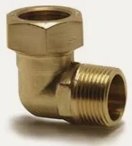
Rozmiary i numery artykułów
Źródło: cennik Kuterlite, październik 2024| Rozmiar | Nr artykułu | Opak. 1 | Opak. 2 | Ilość do zapytania |
|---|---|---|---|---|
| 12mm x 3/8" | 43153K | 5 szt. | 200 szt. | |
| 12mm x 1/2" | 43152K | 5 szt. | 150 szt. | |
| 15mm x 3/8" | 43154K | 5 szt. | 150 szt. | |
| 15mm x 1/2" | 43155K | 5 szt. | 125 szt. | |
| 18mm x 1/2" | 43157K | 5 szt. | 90 szt. | |
| 22mm x 3/4" | 43158K | 5 szt. | 70 szt. | |
| 22mm x 1" | 43159K | 5 szt. | 50 szt. | |
| 28mm x 1" | 43161K | 5 szt. | 40 szt. | |
| 35mm x 1 1/4" | 43162K | 1 szt. | 20 szt. | |
| 42mm x 1 1/2" | 43163K | 1 szt. | 15 szt. | |
| 54mm x 2" | 43164K | 1 szt. | 8 szt. |
- Linia
- Kuterlite K900 Pro
- Zastosowanie
- rury miedziane
- Nazwa w cenniku
- male elbow, copper x BSP taper male thread
Zapytaj o wycenę: Kolano z GZ (gwint stożkowy) K916X.
Dodaj rozmiary do listy przyciskiem „Dodaj” albo od razu napisz do nas. Ceny hurtowe, dostępność i terminy przygotujemy w ciągu jednego dnia roboczego.
Inne produkty w linii
Wszystkie linie systemu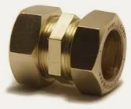
Złączka prosta K910X · 16 rozm.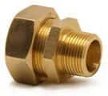
Złączka z GZ (gwint stożkowy) K911X · 16 rozm.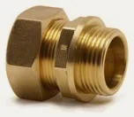
Złączka z GZ (gwint walcowy) K911PX · 10 rozm.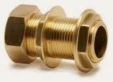
Złączka zbiornikowa długa z GZ (gwint walcowy) K911LBX · 2 rozm.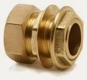
Złączka zbiornikowa z GZ (gwint walcowy) K911TCX · 6 rozm.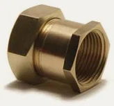
Złączka z GW K912X · 14 rozm.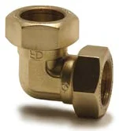
Kolano K915X · 8 rozm.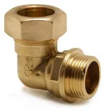
Kolano z GZ (gwint walcowy) K916PX · 4 rozm.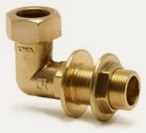
Kolano długie z GZ (gwint walcowy) K916LBX · 1 rozm.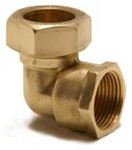
Kolano z GW K917X · 11 rozm.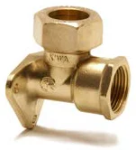
Kolano ścienne z GW K917WX · 2 rozm.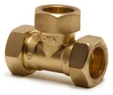
Trójnik równoprzelotowy K918X · 9 rozm.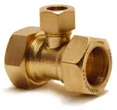
Trójnik z redukcją odejścia K918BX · 9 rozm.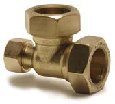
Trójnik redukcyjny (jeden koniec) K918EX · 4 rozm.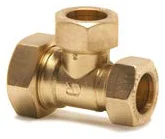
Trójnik redukcyjny (koniec i odejście) K918EBX · 2 rozm.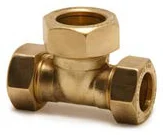
Trójnik redukcyjny (oba końce) K918EEX · 1 rozm.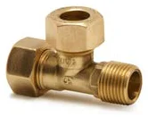
Trójnik z GZ na końcu K920X · 1 rozm.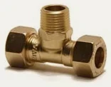
Trójnik z odejściem GZ K920HX · 1 rozm.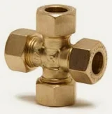
Czwórnik K923X · 1 rozm.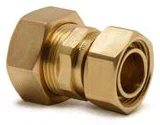
Przyłącze kranowe proste z nakrętką KS926X · 3 rozm.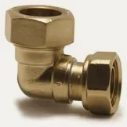
Przyłącze kranowe kątowe z nakrętką K927X · 2 rozm.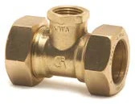
Trójnik z odejściem GW K930X · 5 rozm.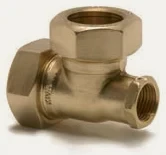
Trójnik z GW na końcu K930EX · 3 rozm.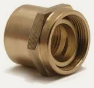
Adapter z GW K941X · 1 rozm.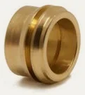
Redukcja jednoczęściowa K947X · 10 rozm.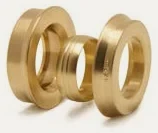
Zestaw redukcyjny K948X · 5 rozm.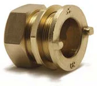
Przyłącze zbiornikowe z kołnierzem KS950X · 3 rozm.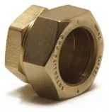
Zaślepka K951X · 7 rozm.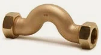
Mijanka K953X · 1 rozm.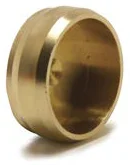
Korek zaślepiający K972X · 5 rozm.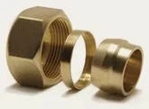
Adapter typ A × typ B do miedzi miękkiej K900 · 2 rozm.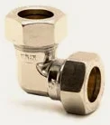
Kolano (chrom) K915XCP · 2 rozm.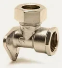
Kolano ścienne z GW (chrom) K917WXCP · 2 rozm.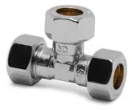
Trójnik równoprzelotowy (chrom) K918XCP · 1 rozm.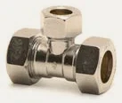
Trójnik z redukcją odejścia (chrom) K918BXCP · 2 rozm.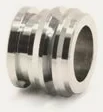
Redukcja jednoczęściowa (chrom) K947XCP · 1 rozm.